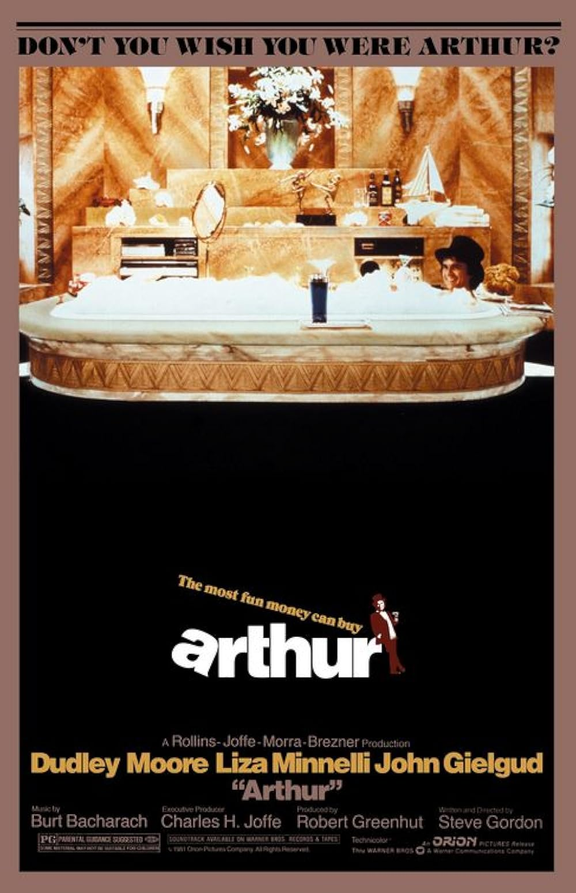

Arthur
54th Academy Awards
(Oscars 1982)
4 Nominations, 2 Awards
| Watched |
| Nominations | ||
|---|---|---|
| Category | Nominees | Result |
| Actor in a Leading Role | Dudley Moore | Nominated |
| Actor in a Supporting Role | John Gielgud | Won |
| Writing (Screenplay Written Directly for the Screen) | Steve Gordon | Nominated |
| Music (Original Song) "Arthur's Theme (Best That You Can Do)" |
Burt Bacharach, Carole Bayer Sager, Christopher Cross, and Peter Allen | Won |